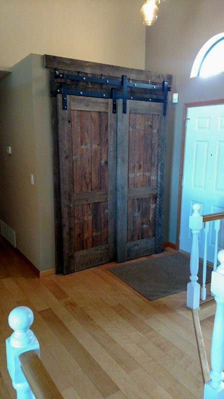

Family-Owned General Contractor
Door installs, window replacements, baseboard, casing, and finish carpentry — the details that make a home feel finished.
Small carpentry details make a big difference in how a home looks, feels, and functions. Kile Construction provides door installation, window replacement, trim work, and finish carpentry throughout Coeur d'Alene, Hayden, Post Falls, and surrounding Northern Idaho.
Whether you're replacing a worn entry door, upgrading tired trim, framing out a new window, or tying a remodel together with finish carpentry, we handle the details so the finished result looks clean, complete, and well-built.

From a single door swap to a whole-house trim package — built-in quality from a licensed general contractor.
Pre-hung and slab doors shimmed, plumbed, and hung so they swing cleanly and latch every time.
New front and exterior doors installed with proper flashing, weather stripping, and hardware.
Window swaps for small and mid-size packages — correct flashing, insulation, and interior trim.
Consistent reveals, tight miters, and scribed fits against uneven walls and floors in older homes.
Crown molding, picture rail, wainscoting, and custom built-up profiles that read as architectural.
Built-ins, shelving, mantel work, and the details that separate a good remodel from a great one.
Small pergolas, specialty carpentry, and one-off wood projects designed and built to fit the space.
Fixing doors that drag, replacing damaged trim, and repairing wood elements in lived-in homes.
A clear, repeatable process keeps your project on schedule, on budget, and low-stress.
We look at the space, measure what matters, and talk through door, window, and trim options.
Profiles, materials, and hardware confirmed — delivered in a clear, itemized written estimate.
Careful removal, proper shimming and flashing, and tight finish work run by Chuck or Norm on-site.
Every door swung, every miter checked, caulking pulled tight, and a clean handover.
Kile Construction isn't just installing parts out of a box. Chuck and Norm Kile have spent more than 30 years doing the actual carpentry — hanging doors, replacing windows, running trim, and building finish details in new construction and older Coeur d'Alene homes alike.
That means better fit, better finish, and better decisions when challenges come up inside a real home — walls out of plumb, rough openings out of square, settled floors, or original trim profiles that nobody stocks anymore.
A new door can improve privacy, function, and appearance. Updated trim can make an older room feel finished. Better carpentry can tie a whole remodel together and make everything look intentional instead of patched. These are the upgrades homeowners notice every single day.
Straight answers to what homeowners ask most before starting a carpentry project.
Call or message us anytime. We'll schedule a free on-site consultation and follow up with a written estimate.
Tell us a bit about your project and we'll be in touch within one business day.